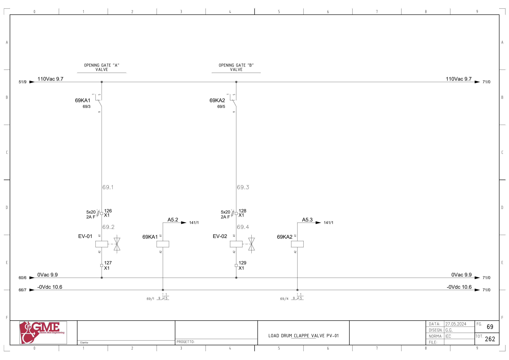
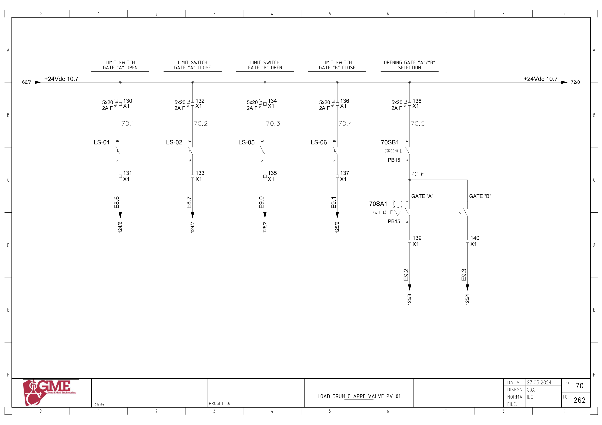
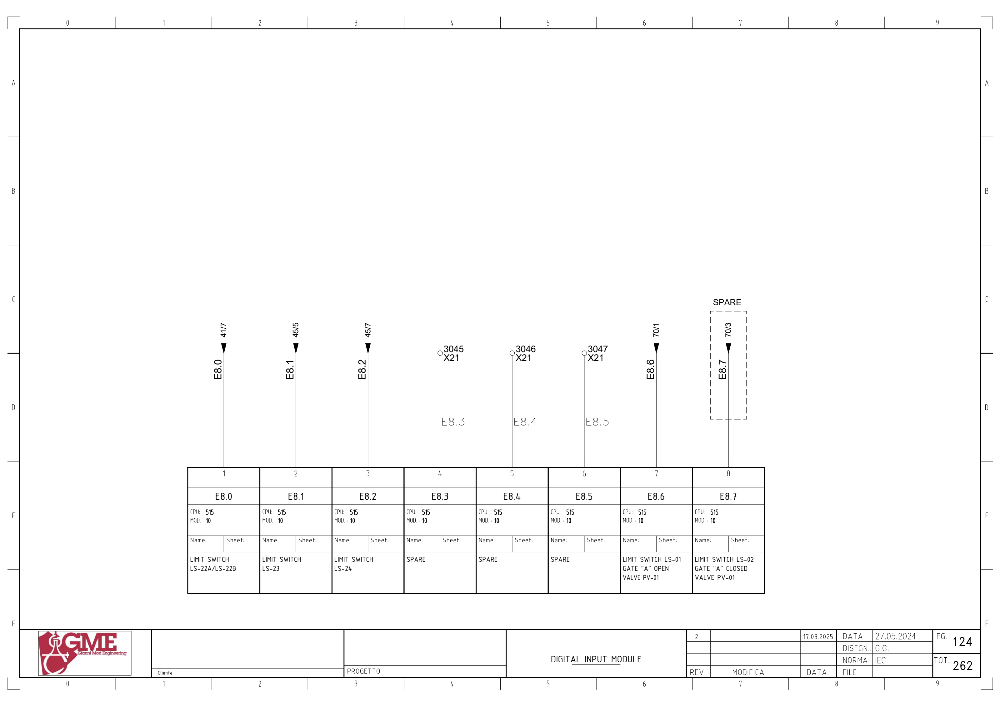
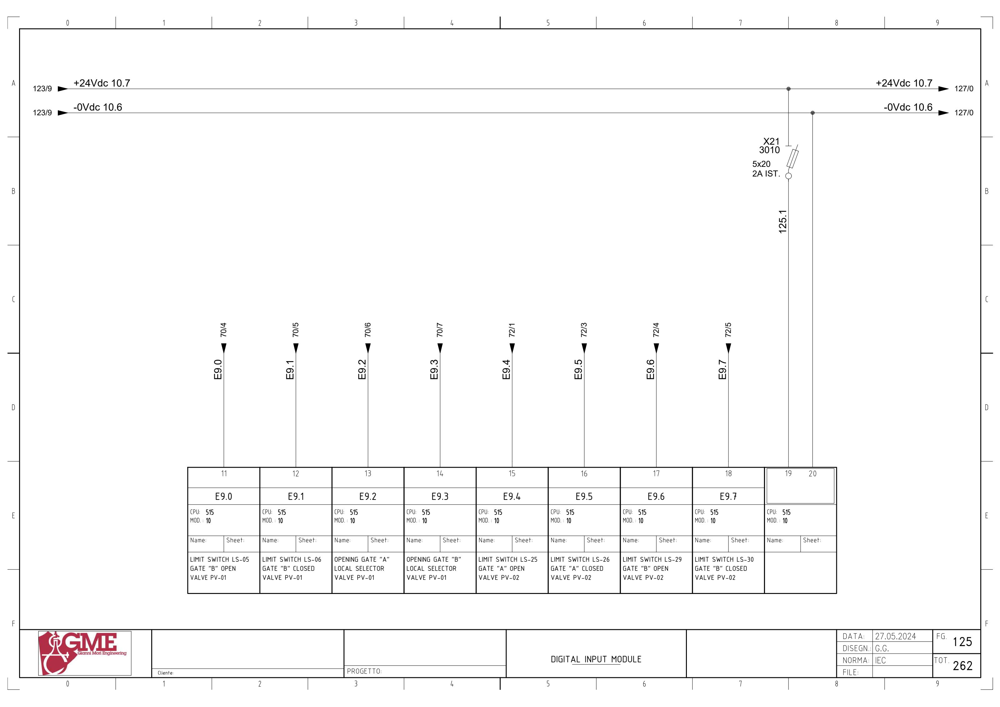
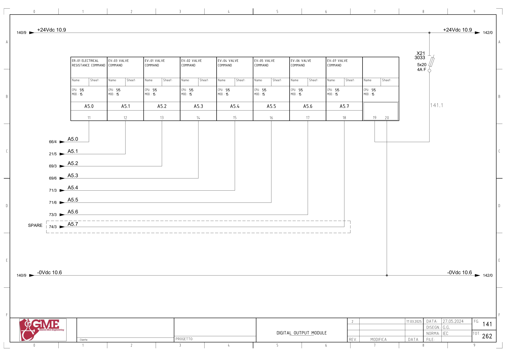

PV01 · 드럼 투입 이중 게이트 전기 회로 추적
1. 도면의 구성과 진단 경계
FG69의 EV01/EV02는69KA1/2 릴레이를 거친110Vac 구동입니다. FG70의 LS01/02/05/06과 PB15 현장 선택기는24Vdc 입력입니다. 도면 MOD.10 입력·MOD.15 출력 단자를 함께 추적합니다.
LS02는 FG70 배선·FG124 설명표·백업I8.7에 존재하지만 FG124 배선 선에는 SPARE 점선이 있습니다. 현재 실사용은 미확정입니다. 시공도면 LS01–08을 PLC 위치 입력 여덟 개로 자동 확장하지 않습니다.
추가 시공도면 · 접속함·케이블·배관 경로 — 승인·현재 설치는 확인 전입니다.
2. 게이트 A 밸브 명령
A5.2 ↔ 백업 %Q5.2 / pv-01 gate a · FG69 · PDF 70
- FG141: MOD.15 단자13 / A5.2
- 69KA1 코일A1→A2 / -0Vdc10.6
- 110Vac9.7 → 69KA1 접점1→9
- X1:126 / 2A F(5×20) → EV-01 코일A1
- EV-01 A2 → X1:127 → 0Vac9.9
전달·사용 위치: 원본 네트워크 1915는 현장 선택·자동 요청·maintenance의 출력 경로를 포함합니다. 명령은 열림 밸브 구동이며 닫힘 센서와 다른 신호입니다.
원본 심볼 직접 참조: 1090 / simulation / ORef 24 · 1090 / simulation / ORef 33 · 1815 / allarms 1 / ORef 1484 · 1815 / allarms 1 / ORef 1493 · 1915 / r1 scraps gate 2 / ORef 394 · 1921 / r1 scraps gate 2 / ORef 37 · 1921 / r1 scraps gate 2 / ORef 41 · 1921 / r1 scraps gate 2 / ORef 43 · 1921 / r1 scraps gate 2 / ORef 47
3. 게이트 B 밸브 명령
A5.3 ↔ 백업 %Q5.3 / pv-01 gate b ev · FG69 · PDF 70
- FG141: MOD.15 단자14 / A5.3
- 69KA2 코일A1→A2 / -0Vdc10.6
- 110Vac9.7 → 69KA2 접점1→9
- X1:128 / 2A F(5×20) → EV-02 코일A1
- EV-02 A2 → X1:129 → 0Vac9.9
전달·사용 위치: 원본 네트워크 1915는 현장 선택·자동 요청·maintenance의 출력 경로를 포함합니다. 명령은 열림 밸브 구동이며 닫힘 센서와 다른 신호입니다.
원본 심볼 직접 참조: 1090 / simulation / ORef 42 · 1090 / simulation / ORef 44 · 1816 / allarms 1 / ORef 30 · 1816 / allarms 1 / ORef 32 · 1915 / r1 scraps gate 2 / ORef 390 · 1922 / r1 scraps gate 2 / ORef 89 · 1922 / r1 scraps gate 2 / ORef 92 · 1922 / r1 scraps gate 2 / ORef 94 · 1922 / r1 scraps gate 2 / ORef 97
4. 게이트 A 열림 위치
E8.6 ↔ 백업 %I8.6 / ev01_open · FG70 · PDF 71
- +24Vdc10.7 → X1:130 / 2A F(5×20)
- LS-01 접점13→14
- X1:131 → E8.6
- FG124: MOD.10 단자7
전달·사용 위치: 원본 네트워크 1921는 물리 입력·내부 Inputs와 출력 상태를 이용한 MEM_OPEN/MEM_CLOSE의 Set·Reset을 포함합니다. 처리된 A 열림 이름은 Inputs.FC GATE A OPEN입니다. 입력→내부 전달의 전체 호출은 확인 전입니다.
원본 심볼 직접 참조: 1921 / r1 scraps gate 2 / ORef 38
5. 게이트 A 닫힘 위치
E8.7 ↔ 백업 %I8.7 / ev01_close · FG70 · PDF 71
- +24Vdc10.7 → X1:132 / 2A F(5×20)
- LS-02 접점13→14
- X1:133 → E8.7
- FG124: MOD.10 단자8
전달·사용 위치: 원본 네트워크 1921는 물리 입력·내부 Inputs와 출력 상태를 이용한 MEM_OPEN/MEM_CLOSE의 Set·Reset을 포함합니다. FG124 단자8의 배선에는 SPARE 표시가 있어 기존 PV01-LS02 불일치를 유지합니다.
원본 심볼 직접 참조: 1921 / r1 scraps gate 2 / ORef 44
6. 게이트 B 열림 위치
E9.0 ↔ 백업 %I9.0 / ev02_open · FG70 · PDF 71
- +24Vdc10.7 → X1:134 / 2A F(5×20)
- LS-05 접점13→14
- X1:135 → E9.0
- FG125: MOD.10 단자11
전달·사용 위치: 원본 네트워크 1922는 물리 입력·내부 Inputs와 출력 상태를 이용한 MEM_OPEN/MEM_CLOSE의 Set·Reset을 포함합니다. 원본의 False 접점이 들어간 가지와 실제 입력·처리 입력을 구분합니다.
원본 심볼 직접 참조: 1922 / r1 scraps gate 2 / ORef 40
7. 게이트 B 닫힘 위치
E9.1 ↔ 백업 %I9.1 / ev02_close · FG70 · PDF 71
- +24Vdc10.7 → X1:136 / 2A F(5×20)
- LS-06 접점13→14
- X1:137 → E9.1
- FG125: MOD.10 단자12
전달·사용 위치: 원본 네트워크 1922는 물리 입력·내부 Inputs와 출력 상태를 이용한 MEM_OPEN/MEM_CLOSE의 Set·Reset을 포함합니다. 출력0과 닫힘 응답·기억은 별도 상태입니다.
원본 심볼 직접 참조: 1922 / r1 scraps gate 2 / ORef 42 · 1922 / r1 scraps gate 2 / ORef 48
8. 현장 게이트 A 선택
E9.2 ↔ 백업 %I9.2 / ev01_sel_open · FG70 · PDF 71
- +24Vdc10.7 → X1:138 / 2A F(5×20)
- 70SB1 PB 접점13→14 → 70SA1 게이트A 선택 접점
- X1:139 → E9.2
- FG125: MOD.10 단자13
전달·사용 위치: 원본 네트워크 1914는 해당 선택 입력을 Open EV A 00 요청으로 전달합니다. 최종 밸브 명령은 별도 네트워크입니다.
원본 심볼 직접 참조: 1914 / r1 scraps gate 2 / ORef 349
9. 현장 게이트 B 선택
E9.3 ↔ 백업 %I9.3 / ev02_sel_open · FG70 · PDF 71
- +24Vdc10.7 → X1:138 / 2A F(5×20)
- 70SB1 PB 접점13→14 → 70SA1 게이트B 선택 접점
- X1:140 → E9.3
- FG125: MOD.10 단자14
전달·사용 위치: 원본 네트워크 1914는 해당 선택 입력을 Open EV B 00 요청으로 전달합니다. 최종 밸브 명령은 별도 네트워크입니다.
원본 심볼 직접 참조: 1914 / r1 scraps gate 2 / ORef 351
위 직접 참조는 복원 원본의 같은 심볼명 위치입니다. 읽기·쓰기 역할, 현재 호출, 현장 사용을 함께 확정한 표는 아닙니다. 원본의 simulation 블록 참조가 있더라도 이번 작업에서 가상 실행·개발·시험은 진행하지 않았습니다.
원본 PLC와 연결
남은 확인과 기록
- LS02 실제 설치·사용·예비 처리와 FG124/SPARE 확인
- 시공도면 ENT2TB2/3의 LS01–08과 OEM 네 센서의 실제 연결 대조
- 원시·Inputs·MEM·HMI 위치의 전체 전달 및 복수 쓰기 확인
- PV01 B 출력의 OFF 가지와 ON 상위 조건, maintenance 명령을 실제 정책과 대조
- 공압 상실·기계 걸림·출력0 이후 실제 복귀 위치·닫힘 시간은 제작사/현장 근거 필요
도면을 함께 확인
FG 69 · 해당 도면 보기

FG 70 · 해당 도면 보기

FG 124 · 해당 도면 보기

FG 125 · 해당 도면 보기

FG 141 · 해당 도면 보기

| 기록 항목 | 내용 |
|---|---|
| 현장 식별 | 설비 ID / 반·단자대 / 모터·인버터 명판 / 도면 개정 |
| 신호 구간 | PLC 명령 / 단자 / 직렬 접점 / 릴레이 / DI / 응답 접점 / 입력 / 내부 DB |
| 관찰 결과 | 시각 / 운전 모드 / 기준값의 근거 / 관찰값 / 최초 불일치 구간 |
| 복구 확인 | 원인·조치 / 원인 해제 / Reset / 재요청 / 주변 설비 영향 |